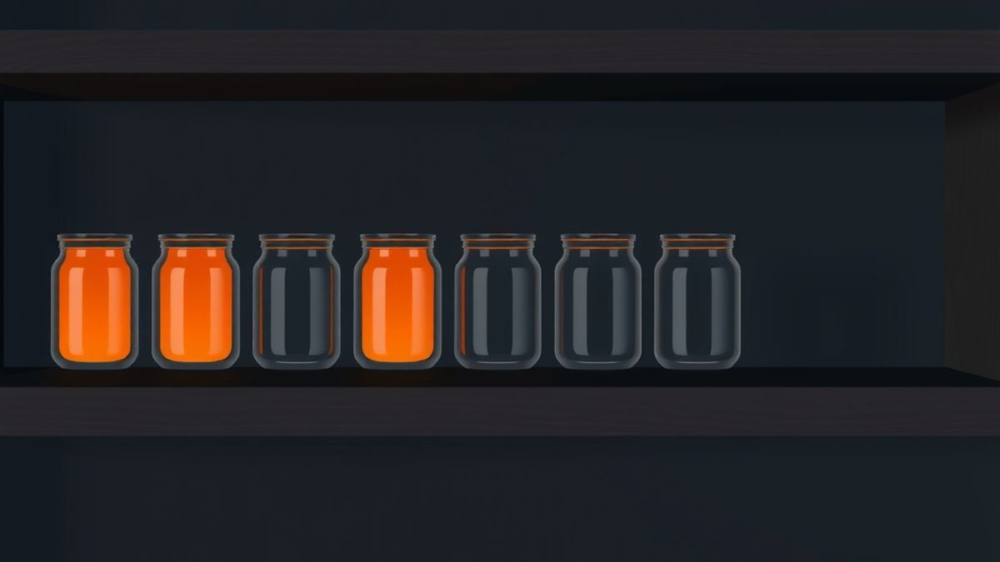

Squats Every Day: Is It Safe and What Happens?
Is it safe to do squats every day? What happens in week one and after, a daily plan by level, easier versions, and the signs it's time to take a day off.


TL;DR
- Bodyweight squats every day are fine for most healthy people if most sets end with a few reps in reserve.
- Expect soreness for the first few days (it peaks 24–72 hours after), then it fades fast as your legs adapt.
- Test one set, then follow the table: about 15–60 squats a day, from chair sit-to-stands to split squats.
- Research says total volume matters more than frequency; daily squats are just an easy way to add practice.
- Keep one or two easy or off days a week, and stop for joint pain, not just tired muscles.
Monday you did 50 squats while the shower warmed up. It felt like nothing.
Tuesday you walked down the stairs like someone twice your age. Wednesday you sat on the toilet very, very carefully.
So now you're wondering whether squats every day was a good idea, or a fast way to hurt your knees.
Short answer: for most healthy people, bodyweight squats every day are fine, as long as most days are easy and a few are lighter still. The trouble starts when every day is a max set or a 100-rep challenge. Below is what actually happens when you squat daily, how many to do, and when to take the day off.
Is it bad to do squats every day?
Not if you're doing bodyweight squats at a moderate effort. That's practice, not punishment, and your legs carry you around all day anyway. A set of 10–20 squats is a small ask for muscles that already handle stairs, chairs and getting off the floor.
Two things change the answer:
- Load. Squatting with a heavy barbell or a loaded backpack every day is a different question, mostly for experienced lifters on a structured plan. This post is about bodyweight.
- Effort. Going until your legs shake, every single day, leaves no time to recover. Tired legs mean worse form, and worse form is where knee and back aches come from.
So the rule is simple: squat most days if you like, but end every set with a few good reps still in the tank, and keep one or two days a week easy or off.
If your form needs a check first, the six steps are in Bodyweight Squat Form. The short version: feet about shoulder-width, sit your hips back and down, knees follow your toes, heels stay down, chest up, stand all the way up.
What happens if you do squats every day
An honest timeline, with no before-and-after promises.
Days 1–3: soreness
If squats are new, expect your thighs and glutes to be sore a day or two later. That's delayed onset muscle soreness. It typically peaks 24–72 hours after unfamiliar exercise and fades within about a week. The lowering part of the squat is what causes most of it.
Soreness isn't a sign you did it right, and it isn't a sign of damage you need to worry about. It's a sign the move was new. On a sore day, do fewer squats or an easier version, not none.
Weeks 1–2: it gets easier, fast
Muscles adapt quickly to a movement they've done once. Researchers call it the repeated bout effect: the same session causes much less soreness the second time around. This is the week most people feel like they've "got it."
Weeks 3–6: stronger, then a plateau
Your number goes up. Then, if you keep doing the same 20 easy squats, progress stalls, because 20 easy squats are no longer a challenge. That's the point to make it harder (a slower lowering, a pause at the bottom, or split squats), not to just add more reps forever.
What daily squats won't do
- Train your whole body. Squats cover legs and hips; you still need a push, a pull and some core work.
- Replace walking or cardio. A few minutes of squats is strength work, not your weekly activity.
- Change one body part on a schedule. Ignore any challenge that promises a specific look in 30 days.

Does doing squats every day work better? What the research says
Nobody has run a big trial on "bodyweight squats every day" specifically. But there's good research on the question underneath it: does training a muscle more often make it stronger?
Total volume matters more than frequency. A 2018 meta-analysis in Sports Medicine (Grgic and colleagues) pooled studies on how often people trained. Training more often was linked to bigger strength gains overall. But when studies kept the weekly total the same, spreading it over more days made no significant difference. The authors concluded that more frequent training helps mainly because it adds up to more total work.
Small and often can beat big and rare. A small 2022 trial from Edith Cowan University (Yoshida and colleagues, 36 young adults, four weeks) had people do six slow lowering contractions of the arm a day, five days a week. Their strength went up by more than 10%. A group doing all 30 contractions in one session a week saw no significant change. Arms, not legs, and a tiny study, so read it as a hint, not a rule. The hint is the useful part: a little every day adds up.
Short home sessions can count. In a 28-day pilot trial, 20 older adults did brief "exercise snacks" at home twice a day, including sit-to-stands from a chair. The authors reported large effects on leg power compared with the control group, and called for bigger studies. It's preliminary, but it's the same shape as a daily squat habit. More on the idea in Exercise Snacks.
Put together: squatting every day isn't magic, but it's an easy way to get more total practice than you'd do in one or two big sessions you keep skipping. And the U.S. Physical Activity Guidelines only ask for muscle-strengthening work on two or more days a week, for all the major muscle groups. Anything past that for your legs is a bonus, not a requirement.

How many squats a day: a plan by level
Start with one test. Warm up with a few easy half squats, then do one set of full bodyweight squats with good form. Stop when your form breaks: heels lift, knees cave in, your back rounds, or the reps get shallow. That number is your test set.
| Your test set | Daily plan | Easier on a sore day |
|---|---|---|
| Can't do one, or under 5 | 2–3 sets of 5–8 chair sit-to-stands (sit down, stand up, arms crossed) | Use your hands on your thighs or a higher seat |
| 5–15 | 2–3 sets of 5–8 squats to a chair (touch, don't sit) | Hold a counter for balance |
| 15–30 | 3 sets of 8–15 full bodyweight squats | 2 sets, or squat a little less deep |
| 30–50 | 3 sets of 10–20 with a 3-second lowering | Normal speed, fewer reps |
| 50+ | 3 sets of 6–10 split squats per leg, or squats with a 2-second pause at the bottom | Plain squats, sets of 15 |
That's roughly 15–60 squats a day for most people, which is fine to do daily. Retest every two weeks and move down a row when your test set goes up.
This table is a conservative rule of thumb, not a result from a study. The idea is the same as with push-ups: sets that feel like real work but leave you able to do them again tomorrow.
A weekly shape that holds up
- 4–5 days: your daily plan from the table.
- 1 day: a slightly harder session: one extra set, or the next row's version.
- 1–2 days: easy or off. A short walk, a few sit-to-stands, or nothing.
Want to make the same reps work harder without adding more? Slow the lowering to three seconds. The research on that is in Slow Down the Lowering.
Signs it's time to take a day off
Doing squats every day only works if you're honest on the days you shouldn't. Take a rest day, or drop to the easiest version, when:
- Your thighs are so sore that your squat looks different: shallower, lopsided, heels lifting.
- You feel pain in the knee joint itself, the hip or your lower back, rather than tired muscles.
- Your test set has gone down two weeks in a row.
- You slept badly for a few nights and everything feels heavy.
Muscle burn during a set and mild soreness the next day are normal. Sharp pain, swelling, or pain that's still there after a few days is not. Stop and get it checked.
Check with a doctor before starting if you have a knee, hip or back injury, a heart condition or high blood pressure, are pregnant, or haven't exercised in a long time. Start with chair sit-to-stands and a sturdy chair against a wall.
Questions people ask
Is 100 squats a day too much?
For a beginner, usually yes, at least at the start. The viral 30-day challenge has no rest days and no scale-down, which is a hard start on legs that aren't used to it. If you can already do 30 or more good squats in a row, 100 spread across the day in sets of 15–25 can be reasonable. Otherwise, use the table and work up to it.
Do squats every day hurt your knees?
Bodyweight squats with good form aren't bad for healthy knees, and knees going a little past your toes is normal (more in the form guide). Knee pain usually comes from doing too many too soon, knees caving in, or squatting through pain. If your knees hurt during squats, squat to a higher chair, and if it continues, get it looked at.
Will squats every day build muscle?
At first, yes, especially if you're new to training. Once 20 squats are easy, they stop being much of a challenge, and growth slows. Making sets harder (slower, paused, split squats) does more for muscle than adding endless easy reps. For the bigger picture, see Bodyweight Strength Training at Home.
Make the squats happen before the scroll
The hard part of squats every day isn't the squats. It's the 11 p.m. moment when you realize you didn't do them and you're three videos into a feed.
Rep Rot locks the apps you lose hours to until you get up and move. Set a limit on the apps that eat your evening; when you hit it, they stay locked until you do a set of squats, counted by your iPhone's camera right on the phone. Nothing is recorded. It counts reps; it doesn't check your form, so the cues above are still on you. You can also set an alarm that only stops after your reps, so the day's first set is done before you're fully awake.

Like any Screen Time limit, it can be worked around by someone determined. What it changes is the default. Set it to your row from the table, not to a challenge video. Rep Rot has a free plan and a 7-day Pro trial, and it's in testing now: email help@reprotapp.com for early access.
Sources: Grgic J et al., "Effect of resistance training frequency on gains in muscular strength: a systematic review and meta-analysis", Sports Medicine (2018); Yoshida R et al., "Greater effects by performing a small number of eccentric contractions daily than a larger number of them once a week", Scandinavian Journal of Medicine & Science in Sports (2022), and the Edith Cowan University release; Perkin OJ et al., "Exercise snacking to improve muscle function in healthy older adults: a pilot study", Journal of Aging Research (2019); Cheung K, Hume P, Maxwell L, "Delayed onset muscle soreness: treatment strategies and performance factors", Sports Medicine (2003); Physical Activity Guidelines for Americans, 2nd edition (2018).